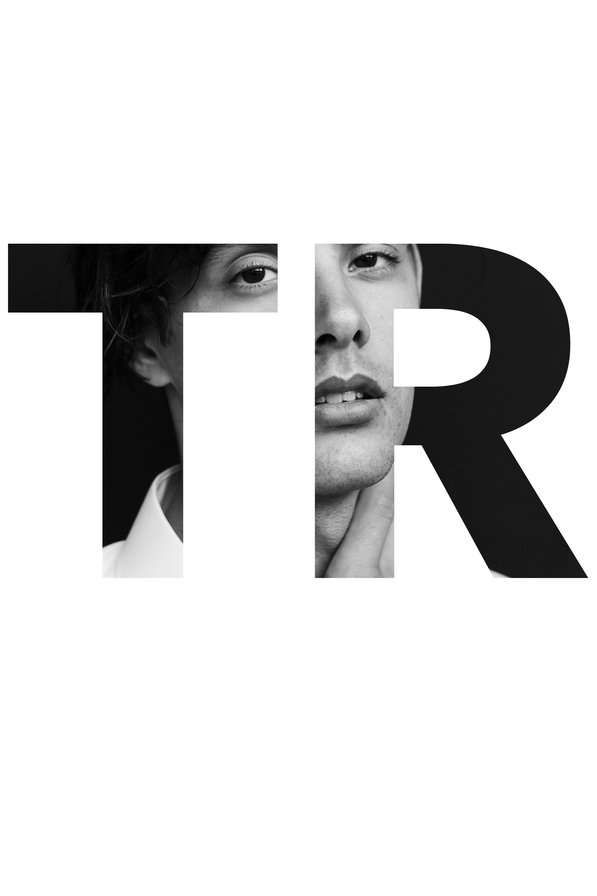

Raybell
☰
×
Home
Work
Contact

Art Director
Philosophy:
Despite what is popular or tending, I'm more interested in things of value; design that is represseted by its own truth and is essential of itself. I hope to attract those of a similar mind.
Designed and developed by Thomas Raybell.
All rights reserved. ©